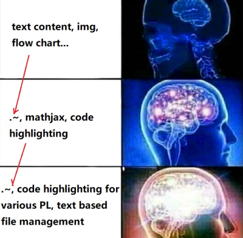

Table of Contents
- 1. Blog
- 1.1. DONE Hugo blogging with Ox-hugo 【用ox-hugo在Emacs中搭建网站流】 @TECH Hugo Ox_hugo
- 1.2. DONE Hugo Blogging with Wercker Auto Build & Deployment 【用Wercker自动部署网站】 @TECH Hugo Git Wercker Org_mode Emacs
- 1.3. DONE Best workaround to use Emacs in MS Windows 【在MS windows中使用Emacs的最佳解决方案】 @TECH Emasc msys2
- 1.4. DONE Org-reveal:solution for math and code highlighting in presentation slide 【在ppt中展示代码高亮，数学公式的优秀解决方案】 @TECH Emacs Org_mode
- 1.5. DONE Mastering emacs in 21 days learning notes - 1 【21 天学会Emacs笔记 - 1】 @TECH Emacs
1 Blog
1.1 DONE Hugo blogging with Ox-hugo 【用ox-hugo在Emacs中搭建网站流】 @TECH Hugo Ox_hugo
SCHEDULED:
:EXPORTFILENAME: Hugo blogging with Ox-hugo
There have been many good articles talking about using ox-hugo to aid efficient blog writing in Emacs/Spacemacs. I read these articles carefully several times and feel pretty confident using this tool, so I would strongly recommend you give them a look:
 This is true for many cases, but no, not for Hugo or ox-hugo. They are amazing official documentation! (Mr.Kaushal I know you occasionally search ox-hugo related articles in all different languages. If you happen to read this, thank you!)
This is true for many cases, but no, not for Hugo or ox-hugo. They are amazing official documentation! (Mr.Kaushal I know you occasionally search ox-hugo related articles in all different languages. If you happen to read this, thank you!)
• ox-hugo official documentation is very well written.
• USING ORG MODE AND OX-HUGO TO REPLACE MARKDOWN IN HUGO WORKFLOW and the three other articles mentioned are very helpful to me too.
• Ken's ox-hugo tutorial is the source of some of my sections mentioned below, which you can see the snapshots are directly from Ken's blog. I re-edit it to help understand the logic of the section tree.
Most content comes from the Hugo official documentation along with these articles. I noticed that there had been quite a few Chinese articles talking about Hugo and ox-hugo, so I am writing this in Chinese.
我放弃Hexo，安装Hugo的最初目的还是想用它配合Emacs-org-mode来写博客记笔记。灵感来自子龙山人和贤民两位老师的博客，具体的安装和使用心得二位已经介绍的非常详细，仔细读完会受益良多。本着不再重复造轮子的原则，这篇文章我想简单写写学习中遇到到有用的东西：Hugo原生的结构设计；Hugo与ox-hugo的对接原理；在Emacs/Spacemacs使用ox-hugo帮助我们在org-mode以极高的效率写博客并发表。
在阅读本文之前，强烈推荐阅读开头推荐的三部分内容。本篇博客主要就是整理了加工了一些来自Hugo官网，和以上三篇文章的内容，并配以更直观的图片帮助理解。
Hugo本身其实支持直接把.org文件渲染成html发布，但是许多人提到其实支持得不是很好。Hugo支持最好的markdown语法类型是blackfriday markdown。所以Emacs user可以使用这款非常棒的后端插件ox-hugo。它提供一种方法解决用 orgmode 写博文的问题：把org文件转成blackfriday markdownd, 然后再生成html文件。首先我们详细看ox-hugo官网对其功能的解说：
According to the information documentation, ox-hugo is an Org exporter backend that exports Org to Hugo-compatible Markdown (Blackfriday) and also generates the front matter (in TOML or YAML format).
简言之，我们主要使用ox-hugo做两件事（1）把org格式内容转换成markdown格式内容；（2）解析org file中的用org语法写front-matter，生成Hugo语法的front-matter，进而使得生成的html能够正确被展示。那么front-matter具体指什么呢？
1.1.1 1. Front matter 页首信息
Front matter give the information about the content, but NOT the information of content. It works as metadata to tell Hugo the general properties of the article. Hugo supports three types of front matter syntax: yaml, toml, json. Wheven you generate a new post/article/blog with
$ hugo new site posts
Hugo will automatically add front matter information at the top of the article like this:
---
title: Good day
date: 2017-09-01T1705-43 (YAML)
draft: true
---
+++
title= Good day
date= 2017-09-01T1705-43 (TOML)
draft= true
+++
{
"title": "Good day" ,
"date": "2017-09-01T1705-43", (json)
"draft": "true"
}
所以想用org进行blog写作，也需要定义自己的front matter. 但是org file里front matter语法如下
:PROPERTIES: :EXPORT_FILE_NAME: ox-hugo-tutoria :EXPORT_DESCRIPTION: Exporting to Hugo's Blackfriday Markdown from Orgmod :EXPORT_HUGO_IMAGES: /img/org.pn :END:
以:properties: 这块为代表的code block就是org以自己的方式定义metadata information。如前段提到，ox-hugo会解这个code block以生成hugo可以识别的YAML等front matter.
ox-hugo一般要求至少要有:EXPORTFILENAME:，我们需要通过这个命令告诉ox-hugo"有新的标题和内容需要去export"。
1.1.2 2. Don't get confused 易混淆的概念
接下来这个问题可能对多大多数前端coder和Emacs熟练手都不是问题，但是这两个段头部代码被我着实混淆了一阵： Heading information指的是以以下语法结构为框架的代码#+hugobasedir:主管ox-hugo导出页面相关设置，例如谁是一级页面，二级页面，导出地址，导出栏目。
Front matter指的是以以下语法结构为框架的代码:PROPERTIES:主管面向一个article内部的性质设置，例如写作作者，写作日期，写作tag。
Heading information (#+hugobasedir)的概念局限于ox-hugo里；而front-matter在markdown，网页config file等其它文件里都有。只是:PROPERTIES:这种表达形式是org式写法。换做org支持的另一种projectile导出html的front matter可能是这样:base-directory "~/Dropbox/org/blog/"
1.1.3 3. Content type
Content type 就是一系列不同的表达式样（layout），根据我们指定的不同的section type有不同表达式样法则，这里暂且把section翻译成一个网站下的不同栏目，例如blog，photo，quote，post，about，tages或者其它你想自定义的栏目。Hugo通过front-matter支持这些不尽相同的content type。
Hugo 认为每个栏目最好只做同一件事情，例如照片专栏只发发照片，post专栏集中发文章。所以除非我们自定义，hugo指定每个栏目的子单元都会自动继承一些此专栏pre-defined的特性，这样能最大限度的重复使用一个定义好的栏目，同时尽量减小‘config每个栏目’工作。
设定content type: 只需在源文件的头部引用hugo提供的heading information/metadata information（即front matter）即可，能迅速方便的修改一两个页面的layout。如果不能满足需求，可用hugo提供的自定义设置archetypes，按照hugo指定的结构组合方式，编写正确的index.md文件拼接好一个网站的layout即可。
如果你没有指定表达式样，比如暂时不太在乎如何展示photo这个栏目，Hugo有这么一个default设定：在front matter大部分信息缺乏的时候，通过每个文章存储path或者所在section猜出给这篇文章赋予什么layout。这会让我们在迅速上手写作blog的时候非常省心。
1.1.4 4. Page boundles
Hugo 0.32以上的版本，使用page boundles的模式来管理网页源和图，从父子结构分类的角度看，有两种：leaf类页面和branch类页面。branch类页面允许在其内部嵌套更深层次的页面，而leaf规定其不能再有子页面。
任何一个叫index的页面文件都是leaf型，叫index的页面文件都是branch型。所以可见org文件里index的文件都会被输出成单页，没有子文件夹。最常见的index页面是下文会提到的分类里面的categories和tags index pages，它们都是单页，除此之外多数时候我们会使用branch型。如图: file:///D:/Hugo/myblog/static/img/Hugo blogging with Ox-hugo 1.png Content文件夹在这里是home page, 他的主要功能是hosting“决定网站layout设定”的信息（在这里就是定义了branch型页面类型的index.md），所以hugo规定home page至多只能包含图片，而不能包含其它的content pages，只承担layout设定而不为article source提供场所。注意content里面的内容结构安排，应当和你想要渲染的网站结构一致。
{kind=link}
1.1.5 5. Section and nested section
Section是一组页面的集合称呼，一般被放在content文件夹下面，就是上文提到的‘内容结构组织’的组成单元。从default设定来讲，content下面的每个一级文件夹自成一个root section。同时上面也提到section可以嵌套，即在一级文件夹下方再建二级section文件，构成一个更深层的section。
那么问题来了，hugo是如何知道nested section呢? 答案是：通过文件夹里要有index.md文件指定结构的设定。依此原理可以构建三级四级更深的section目录。 为了确保每一级网页都能被导览正确的链接到，每个最底层的文件夹里都要至少包含一个有内容文件，例如index.md.
content
└── blog <-- Section, because first-level dir under content/
├── funny-cats
│ ├── mypost.md
│ └── kittens <-- Section, because contains _index.md
│ └── _index.md
└── tech <-- Section, because contains _index.md
└── _index.md
1.1.6 6. Head information
ox-hugo对org文件存放位置并没有特定要求，但是其头部的#+hugobasedir: 必须要被清晰的定义，因为这个地址告诉ox-hugo你的root directory在哪里，ox-hugo就会在这个地址下的content里面生成转化的md文件。很多用户自定义#+hugobasedir: ..即是本org文件所在的parent path.也有人定义#+hugobasedir: .代表path与现在的org文件同文件夹，如果root directory是跟现在org文件同文件夹，c-c c-c H A转化的结果就是这样：

仔细体会以下示例：以root目录c:\hugo\myblog\为例：
(1) orgfile在myblog下方 且#+hugobasedir: .
(2) orgfile在myblog\content-org下方 且#+hugobasedir: ..
在c-c c-c H A 后都会产生如下形式，只不过(2)中hugotest.org在content-org里面

1.1.7 7. Heading management
The official documentation as well as the attached youtube tutorials have provided great explaintation of how hugo translate metadata of _index.md files to the headings of html with Hugo heading management system.
建立一个有一篇文章的post

继续新增一个有两篇文章的fishsticks

1.1.8 8. Tree and subtree writing
In normal Hugo, individual pages written in markdown (or now in org-mode) are placed inside the content directory inside the project root. With ox-hugo, a single org-mode file can be used to generate all pages, posts, and any other content. This has some advantages in allowing usage of org-mode functionality, as well as re-use of content or property settings across pages.

1.1.9 9. Taxonomies 分类型页面
这段是index管理page boundle的良好功能的又一个展现:通过 taxonomy index pages 就能建立一系列分类页面,例如tags and category,为分类页面单独建立管理page使拥有这些属性的文章被自右交叉引用,用户可以通过点击任何一个tag或者categories就能达到文章页面。在org写作里通过在headings添加实现，org到md转化由ox-hugo完成，语法差别很细微。如下图，还是上文的源码，只是为文章添加了两种categories，两种tag:

在源码的三篇文章里分类update和reviews被提到两次，标签fear和herpes也被提到两次。从生成的html来看， index.md刚好与之对应：分类的index page 提供了所有需要的分类（i.e. tags, categories）每个分类下还有list page显示所有与之相关的页面内容。导航就是这样实现建立的，使得我们能“实现不同分类间的交叉引用，点击任何一个入口进入文章”。
1.2 DONE Hugo Blogging with Wercker Auto Build & Deployment 【用Wercker自动部署网站】 @TECH Hugo Git Wercker Org_mode Emacs
The automated static website generators (e.g. Octopress, Hexo and Hugo) have made website buiding and maintaining way more relaxed than before. The workflow has been simplified to: write and save markdown – preview on the localhost 1313 – generate the ~/public (HTML) file – push to a remote server (Github) – backup source code.
If one considers all technicalities, there are still many questions worth discussing to make this process more efficient, such as (1) which is the best way to host HTML files and source code files (2) which is the better way to automize the procedure.
I used to use Hexo where three things need to be tracked separately: source code and ~/public file (both updated for every article), forked/cloned theme (updated according to theme author) and Hexo generator. I have to use git submodules to track everything. Soon, the hustle and page generation speed make me convert to Hugo. Hugo requires only a binary file to generate a website, with which the update cannot be more straightforward: you download a new .exe file and replace the old one. The updated theme can be manually merged as long as the site config.toml file is well preserved.
Let's go back to the first issue. The Hugo official manual has given two way to publish ~/public file: (1) using Master branch of user.github.io to host /doc (instead of public) folder, which is the easiest one to me; (2) using gh-pages and the advantage of this method is that allows you to have another branch hosting source code in the same repo. I fail to generate /doc file somehow, but it gives me a chance to try Wercker, which surprisingly allows me to achieve the first method with the same advantages of the second method. Long story short, now I am using the Master branch of user.github.io to host ~/public file and dev branch to host source file.
My answer to the second issue is using Wercker. It will automatically go to your source code repo and build the ~/public folder and deploy the website. So the process mentioned at the beginning of this article becomes even easier: write and save an article in markdown – push the whole source code to the remote repo. This means you do NOT need to generate and deploy in the local terminal any more. Wercker does the work every time it detects a new push on the designated repo on the remote server. The script wercker.yml (generated and pushed by you) will tell Wercker precisely how and where to build and deploy. There're also other popular continuous integration tools such as Travis CI, Jenkins which has advantages at different aspects such as free usage, commercial stability, running speed and etc. I choose to use wercker based on my needs.
The Hugo instruction https://gohugo.io/hosting-and-deployment/deployment-with-wercker/ is very detailed and well written, and you should be quite clear before the 'Configure Access' section. The Wercker has changed quite a bit in the generating wercker.yml part. You do NOT HAVE to search and choose boxes or steps to build and deploy. The default script contains the box information, and it can be modified unless you don't like it. The build and deploy part are generated separately in the workflow section (press ctrl and + to see the bigger picture) 
Here is my wercker.yml:
# This references a standard debian container from the
# Docker Hub https://registry.hub.docker.com/_/debian/
# Read more about containers on our dev center
# https://devcenter.wercker.com/overview-and-core-concepts/containers/
box: debian
# You can also use services such as databases. Read more on our dev center:
# https://devcenter.wercker.com/administration/services/
# services:
# - postgres
# https://devcenter.wercker.com/administration/services/examples/postgresql/
# - mongo
# https://devcenter.wercker.com/administration/services/examples/mongodb/
# This is the build pipeline. Pipelines are the core of wercker
# Read more about pipelines on our dev center
# https://devcenter.wercker.com/development/pipelines/
build:
steps:
# Steps make up the actions in your pipeline
# Read more about steps on our dev center:
# https://devcenter.wercker.com/development/steps/
- arjen/hugo-build@2.8.0:
# your hugo theme name
theme: hugo-theme-cleanwhite
flags: --buildDrafts=false
deploy:
steps:
- install-packages:
packages: git ssh-client
- sf-zhou/gh-pages@0.2.6:
token: $GIT_TOKEN
domain: sheishe.xyz
repo: QiKatherine/QiKatherine.github.io
branch: master
basedir: public
Notice the name 'build' and 'deploy' in the workflow above need to be the same with the name in steps in the wercker.yml file.
You can also add a local deploy.sh to make source code push easier too:
#!/bin/bash cd ~/Hugo/myblog/ # Add changes to git. git add . # Commit changes. msg="rebuilding site `date`" if [ $# -eq 1 ] then msg="$1" fi git commit -m "$msg" # Push source and build repos. git push origin -u dev
Happy hacking! :)
1.3 DONE Best workaround to use Emacs in MS Windows 【在MS windows中使用Emacs的最佳解决方案】 @TECH Emasc msys2
1.3.1 Background
Due to the working environment limitation, I occasionally have to use MS windows system (and therefore Emacs for Windows). But some similar users and I have constantly found cases where Emacs is significantly relying on *unix system. So far, my experience is that compling Emacs in msys2 has been a best (maybe) workaround in this situation. If you this is relatable to you, you might want to give it a try: https://chriszheng.science/2015/01/23/Guideline-for-building-GNU-Emacs-with-MSYS2-MinGW-w64/ There has been ample discussion online, so I will be writting in Chinese. If you are interested in the trouble shootings below, try google translate. It will be fun :).
我因为工作的原因有时候不得不使用Windows。Emacs for Windows，在这种情况下，已经是一个比较合适的选择了，我用了半年多对它各方面都还相对满意。但是总不时会发现，Emacs里面还有很多严重依赖*Unix system的操作。为了找到一劳永逸的办法（做梦），我尝试过cygwin, mingw64还做了一些功课，目前发现最好方式是，将整合到msys2里面使用，或者使用msys2编译的Emacs。
1.3.2 MSYS2
MSYS2是MS-Windows下编译自由/开源软件的一个环境，衍生自Cygwin，也就是说它和Cygwin一样，编译出的程序不能脱离Cygwin环境运行(其实就是离不开那几个DLL文件)。但MSYS2有一个很牛的地方是它自带了MinGW-w64，MinGW-w64可以认为是MinGW的升级版本，编译出的程序是原生的Windows程序，最大的特点和名字一样，支持编译出64位的程序。目前MSYS2和MinGW-w64开发都很活跃，两者结合，既发挥了MSYS2对*NIX世界的兼容性，又能用MinGW-w64编译原生代码，很爽，自带的包很丰富，包管理采用Arch Linux用的Pacman，非常的方便。
据说msys2目前是提供最多类Unix开发工具的环境，而且为想尝试*unix的windows users整体上提供了十分优秀的模拟环境。
Msys2的下载安装都很简单，参照管网指南操作即可。中文用户配置可以参考以下链接： https://zhuanlan.zhihu.com/p/33751738 https://zhuanlan.zhihu.com/p/33789023
1.3.3 Compiling Emacs
在msys2里面安装最简单的是使用pacman -S Emacs，安装完的版本在c:/msys2/usr/bin里，dotfile在c:/msys2/home/user.emacs.d下方，我试图运行内置function，正常，但是使用dotfile加载同样的function总显示加载错误。/
而且chris老师提到Windows下使用emacs最好的方式还是用自己编译的Emacs，所以我也选择这么做。自编译Emacs要安装一系列libraries，然后从原代码git.sv.gnu.org/emacs.git从这里clone所有的东西下来，按下列文章一步一步编译 https://emacs-china.org/t/topic/3276/13 https://chriszheng.science/2015/03/19/Chinese-version-of-Emacs-building-guideline/ http://git.savannah.gnu.org/cgit/emacs.git/tree/nt/INSTALL.W64
这个安装包都是为了在msys2中编译Emacs而写，所以安装途中不需要由什么特别改动的地方，注意一步一步执行代码就好。还有一点不得不提，Gti自动改换行符的功能(autocrlf)很讨厌，会造成各种意想不到的神仙bug（e.g. 很多人猜测这个也是造成spacemacs版本的font-lock+ error的原因）我们用下面的命令关掉它：
$ git config core.autocrlf false
Update: 新版的git已经默认这项是关闭了。如果有需要，可以安装完后再把值改回true，一直默认关闭会导致有些git操作持续return warning，泪目。
安装时需要一些依赖库，如果你的系统里面MSYS2已经被添加到PATH环境变量里(例如PATH里包含了C:\msys2\mingw64\bin)，就不用从mingwin64/bin里面复制必用的libraries去c:/emacs1/bin了，所以直接在PATH里添加环境会比较方便。
1.3.4 Advantages
跟以前使用的Emacs for MS Win64一样，emacs配置文件还是默认在C:/Users/AppData/Roaming/.emacs.d中。大多数package放在本地c:/msys2/home/user/.emacs.d/elpa/yourdir/以后使用 (add-to-list 'exec-path "yourdir") 即可正常调用。
但是我感觉从运行速度来讲，msys2 compiled Emacs比Emacs for Win64 快很多 。所以在win中使用Emacs，虽然也有WSL或者VM based的解决方案，但是msys2（在许多人看来）仍然是一个在win环境中使用类unix系统的优秀途径，希望未来能研究编译过的emacs在msys2提供的类unix系统里是否和其他libraries有更好的互动。
1.4 DONE Org-reveal:solution for math and code highlighting in presentation slide 【在ppt中展示代码高亮，数学公式的优秀解决方案】 @TECH Emacs Org_mode
I have used flash card for remembering new things for years. Before using software like org-drill or Anki, I was pretty much putting everything in slides, printing on papers and cutting it into a portable sized card and carried in my pocket. So I have been exploring an ultimate solution of perfect formatting for everything. This picture shows what I feel about slides making tools. 
I always thought math functions display tricky, but the Latex with Beamer has provided an adequately good template for most people. As a comparison, the code highlighting is tricker, especially for not-so-prevalent programming languages like Lisp. In order to adequately demonstrate code highlighting, sometimes people have to paster code in Notepad++ with designated formatting, then paste into MS word, then to MS powerpoint. Or take an alternative hustle to explore various online highlighting transformation tool. If you are looking for a long term hustles solution, then I think "Emacs/Spacemacs + Org-mode + org-reveal" makes an excellent tool for you.
yjwen/org-reveal: Exports Org-mode contents to Reveal.js HTML presentation. - https://github.com/ How to create slides with Emacs Org mode and Reveal.js | Opensource.com - https://opensource.com/ reveal.js – The HTML Presentation Framework - https://revealjs.com/
The above links give many details of the code/manual/demo of org-reveal.Specifically, the second and third links provide excellent instruction about how to toggle and customize your presentation. I highly recommend you to give them a look.
In this article, I am only adding a few trouble shootings for the issue that I met.
The installation did three things (1)installing ox-reveal (2)installing reveal.js (3)installing htmlize, but the spacemacs comes with htmlize installed.
I add ox-reveal in the package list of spacemacs dotfile, reloading the dotfile but it did not installed. The author also mentioned that ox-reveal in MELPA maybe out of date. So alternatively, I downloaded the .el file and manually required it.
There are also two ways of calling reveal.js as described by the readme. I am using the second where the source url was put in the config file. Notice there seems to be an old url(http://cdn.jsdelivr.net/reveal.js/3.0.0/) which does NOT work any more. If your exported html file is just an empty page with theme background, check if you are refering to the right url. The current source and config code is shown below:
;; Emacs
(require 'ox-reveal)
(setq Org-Reveal-root "file:///path-to-reveal.js")
(setq Org-Reveal-title-slide nil)
;; Spacemacs/Using use-package
(defun yourname/post-init-ox-reveal ()
(use-package ox-reveal
:ensure t
(setq org-enable-github-support t)
(setq org-enable-reveal-js-support t)
(setq org-reveal-root "https://cdn.jsdelivr.net/npm/reveal.js")))
1.5 DONE Mastering emacs in 21 days learning notes - 1 【21 天学会Emacs笔记 - 1】 @TECH Emacs
This article is part of my learning notes of Mastering Emacs in 21 Day, which is a series of Chinese based tutorials post by zilongshanren (子龙山人) - https://github.com/ The official learning note is at here: Master Emacs in 21 Days - http://book.emacs-china.org/ My notes extend the official notes with my personal learning experience. Since there has been ample discussion of using and learning Emacs in English community, my learning note is written in Chinese to benefit more addtional readers.
这篇文章是我学习子龙山人老师的spacemacs rock系列笔记之一。在原视频配套的基础上我还做了一些扩展和补充，有的知识点还加了视频对应的时间点，希望能帮到一些人:).
1.5.1 1. 基本知识
• 【系统】Emacs相当于一个elisp language based的操作系统。这个操作系统的原理是，每次Emacs启动过程就相当于一系列功能通过loading files(aka代码块)的实现。在每次使用前，成百上千的functions被加载到workspace中with default setting，等待调用，或者被custermize。因此所有的设置，架构都可以通过调function portal修改成想要的value；或者在原有的value/function的基础上，继续开发一系列指令来增进，比如我们自己编写的各种自定义函数。连整个emacs的启动都可以概括为一句话：加载一系列脚本。只不过这些脚本有的是内置的（built in），有的来自安装的插件包，有的是我们自己写的。配置emacs归根结底是在配置各种各样的脚本。
• 首次加载一个配置复杂/成熟的Emacs（例如spacemacs或Purcell的Emacs），会耗费比较长的时间，因为需要依次安装所有cofig.el中提到过的packages。在经过首次配置之后的时间里，每次启动Emacs的loading file主要以加载和更新为主，而极少数package 安装只有才加载检查发现没有package时候才会发生。
• loading的文件主要是.elc文件，是经过编译的.el文件的二进制形式，加载更快。但平日的修改是在更容易阅读的.el文件上进行的，所以如果你手动修改完.el文件，一定要记得编译以便Emacs自动执行，For example with Emacs-Lisp you do:
(byte-compile-file "foo.el")
否则Emacs要么加载没有被同步修改的二进制.elc文件，要么会因为没找到.elc，去加载更缓慢的.el文件。
• 光标放在最后一个反括号的末尾，按C-x C-e，是执行一行命令on the fly，作用等同于M-x 命令 回车。
1.5.2 2. 新建init.el【26’50】
• 【init.el】初始hacking： Emacs像一个状态机，即使还没config init.el, 裸机Emacs也加载了许多build-in functions以确保能被基本使用。所有的状态在default value下运行。在这种情况下，可以通过M-x调用已有的命令来做到修改设置，但是所有临时设置的东西关掉后都会erase，还原成默认value–【临时改动】。还有一种就是直接去el/.elc的脚本里修改代码hard coding modify，有很多坏处。比如，每次更新插件，都要自己回去重新修改–【永久改动】。
所以更好的选择是不动原脚本，通过预加载修改达到目的，也就是手动写一份init.el的意义。为了使得emacs每次打开都有最佳设置，我们在C:\Users\heqi2\AppData\Roaming\.emacs.d\文件下新建了init.el的elisp文件，来写想要的配置。因为Emacs默认设置打开时，会自动寻找home目录的.emacs.d\文件下下面init.el文件来执行：（1）如果找得到，每次开启Emacs都先重新执行一遍我们的config，以达到预加载我想要的全部舒适配置；（2）如果其不存在init.el，Emacs还是原始裸机也能用；（3）如果init.el代码有错没加载成，也是裸机（后面使用usepackage来管理初始加载，可以避免这种“因为一点小错误”使得整个初始加载都失败”的问题）。
注意：** 如果希望把配置放在 ~/.emacs.d/init.el 文件中，那么需要手工删除 ~/.emacs 文件。
• 使用init.el管理personalized config额外的好处是，init.el文件还可以在GitHub备份，换电脑也可以用，甚至不用修改别人电脑里有的Emacs配置，用U盘就能在一个Emacs里使用不同的config。
• Emacs的命令执行是按顺序来的，这个顺序既只文件也只内部命令。各种function一个一个的被call（也就是load/require），一行完成后再进行下一行。例如，只保存第1个命令，下次打开Emacs显示字体为16pt；保存1.2命令，在1之上load open-init-file命令去workspace；保存1.2.3命令，在12之上还能使得我们通过按f2真正调用这个open-init-file:
;; 更改显示字体大小 16pt (set-face-attribute 'default nil :height 160) ---- 1 ;; 快速打开配置文件 (defun open-init-file() (interactive) (find-file "~/.emacs.d/init.el")) ---- 2 ;; 这一行代码，将函数 open-init-file 绑定到 <f2> 键上 (global-set-key (kbd "<f2>") 'open-init-file) ---- 3
这个知识点目前看起来很简单，但是以后涉及到要去其它.el文件层层加载，记得这个顺序性load的特质会帮助理解Emacs的加载机制。
•在Emacs里命令按行顺序执行A–C，如果遇到“call A的前提是先要加载B function”（但是B没有加载在workspace里的情况时），Emacs会先走开，去B.el相关的文件load B function，执行完再回来继续加载剩余的东西，然后再执行C。因此相互依赖的feature有可能因为调用顺序没安排好而导致initiliaze出错，这样能解决。为了解决依赖顺序造成的潜在问题，Purcell写了一个after-load函数，目的是把一些相互依赖的feature的加载顺序理顺，例如feature A依赖于feature B，则可以写成(after-load 'B 'A)，这样如果错误地在B之前require了A也不会影响正常启动：
(defmacro after-load (feature &rest body)
"After FEATURE is loaded, evaluate BODY."
(declare (indent defun))
`(eval-after-load ,feature
'(progn ,@body)))
1.5.3 Major mode and minor mode
• 【mode基础】在开始配置之前让我们先来区别 Emacs 中major mode 与 minor mode 的区别。Major mode 通常是定义对于一种文件类型编辑的核心规则，例如语法高亮、缩进、快捷键绑定等。 而 minor mode 是除去 major mode 所提供的核心功能以外的额外编辑功能（辅助功能）。 例如在下面的配置文件中 tool-bar-mode 与 linum-mode 等均为 minor mode。
【查看minor mode】简单来说就是，一种文件类型同时只能存在一种 major mode 但是它可以同时激活一种或多种minor mode。鼠标放在powerline可以显示一些minor mode信息，如果你希望知道当前的模式全部信息，可以使用 C-h m 来显示当前所有开启 的全部minor mode的信息。（你如果发现已经设置过的mode没开，可能因为没有设置成global的）。
• 【hook】major mode里面还有一个重要的概念是hook。一个major mode（ e.g. Emac-lisp-mode ）相当于一个list，就是一些它自带的function。但这里还可以有一串儿minor mode挂在上面。这个major mode开启默认所有list上的特性都会被自动加载。如果我们需要的设置没有，需要手动添加，有可能是通过hook，一般对于每个特定的package如果使用hook，GitHub上有具体设置指南。例如 (add-hook 'emacs-lisp-mode-hook 'show-paren-mode) .

• Hook 就是一串特定的functions: A hook is a Lisp variable which holds a list of functions, to be called on some well-defined occasion. 大部分hook都尽量是normal且一致的，方便全局调用，我们也会自己通过add-hook加function到hook上来满足特殊的需求。自行设计hook list要注意顺序问题，因为上文提到一串function是按顺序依次执行的，如果后面的会影响前面的，那么顺序自定义就很重要。相关阅读: Hooks - GNU Emacs Manual - https://www.gnu.org/
• Emacs操作系统很像一个大的状态机，储存着很多可修改的状态。Mode调用和设置也是通过function修改value实现。Emacs虽然因为没有变量空间而导致所有变量全局可见，但是因为mode的default设置，使得有些value只是buffer local的(aka mode每个buffer都独立保留了一份default 值)，如果需要在全局应用某些mode，要注意上hook或者修改global setting，注意查看每个安装文档的说明。
• 如上文所说，让mode生效有三种方式（1）临时调用M-x company-mode，可以反复修改value，但有可能只修改了临时buffer local value（2）直接修改mode.el脚本；都不如这种好：(3) 写好mode设置放在init.el里面让它在Emacs开启时设置好。
【mode和setq】第二课【2'10】：以company-mode为例讲解以上知识：mode的种类（还有其他state）开启还是关闭，本身是value，每个buffer都有储存一份，所以setq只会修改本buffer的值，setq-default才会修改全体buffer的值。只有当一个value生来就是全局变动的时候，setq和setq-default才是一回事。set-key也是类似，如下注意左右列的区别，尤其当想要的修改下次没生效，查看变量是否是buffer local很重要。例如以下区别：
| (company-mode t) | (global-company-mode t) |
| (setq cursor-type 'bar) | (setq-default cursor-type 'bar) |
| (set-key ..) | (global-set-key …) |